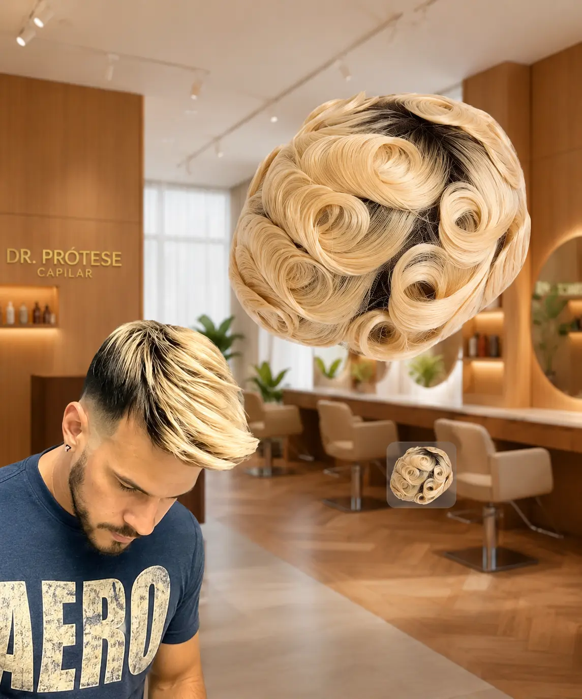
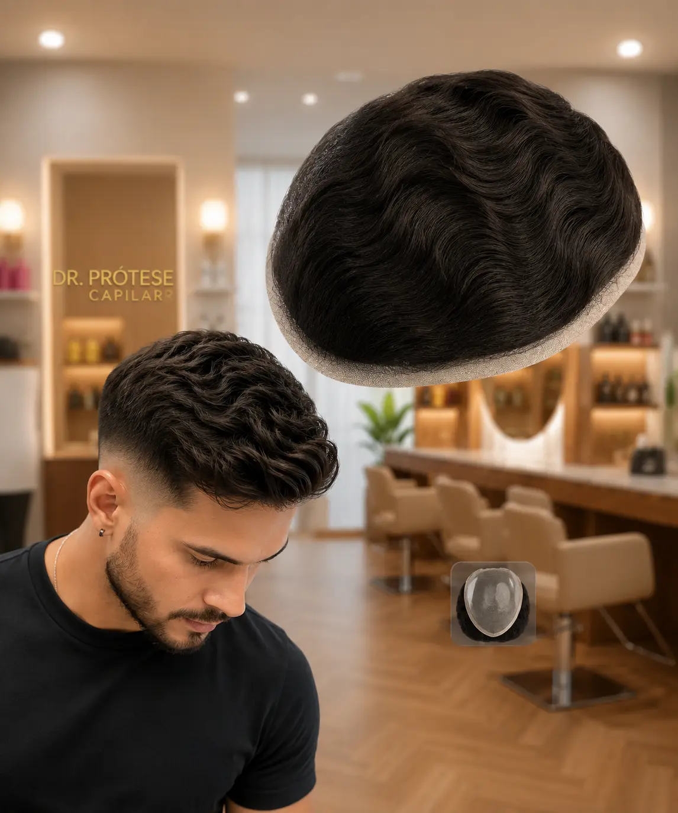
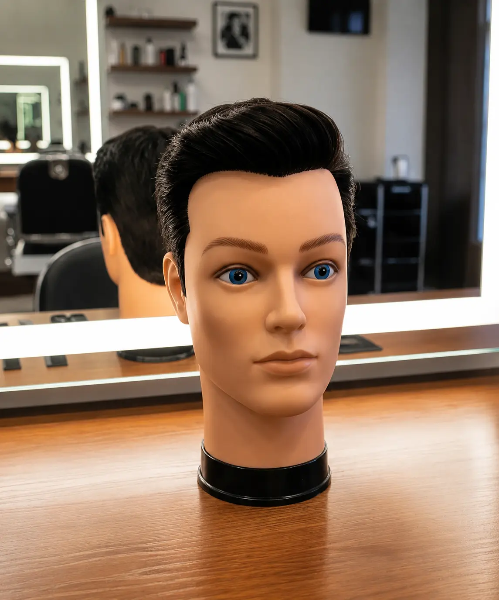
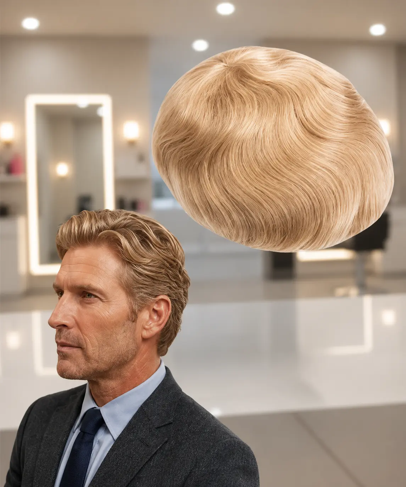
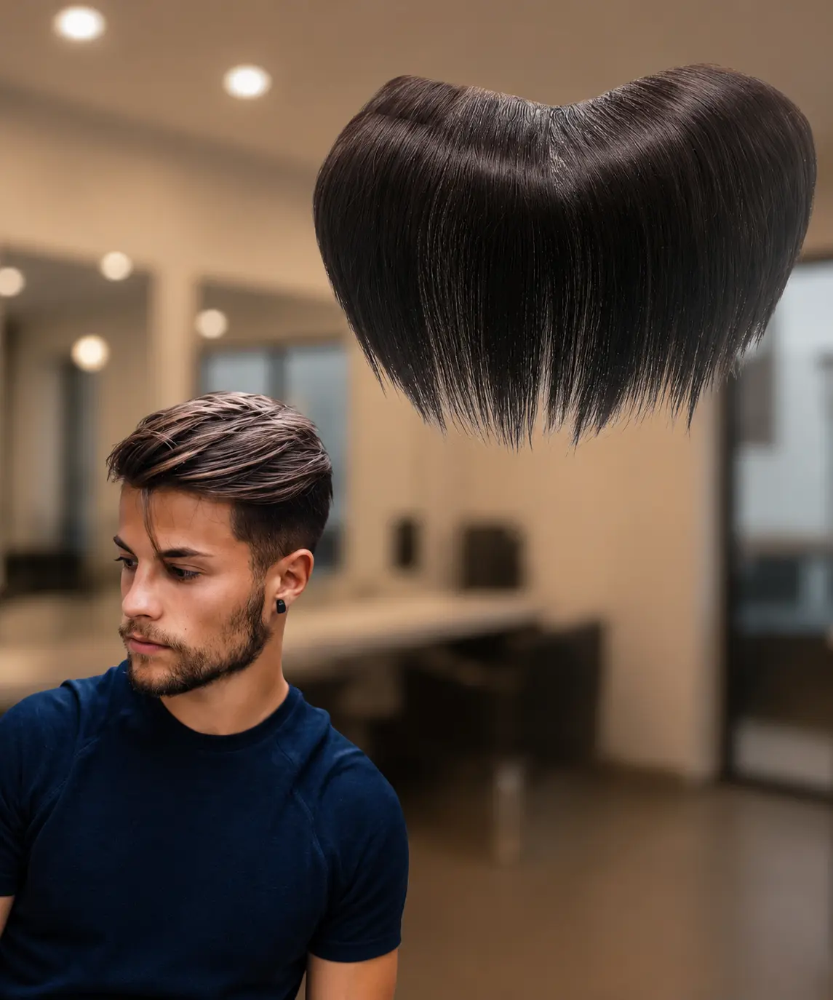
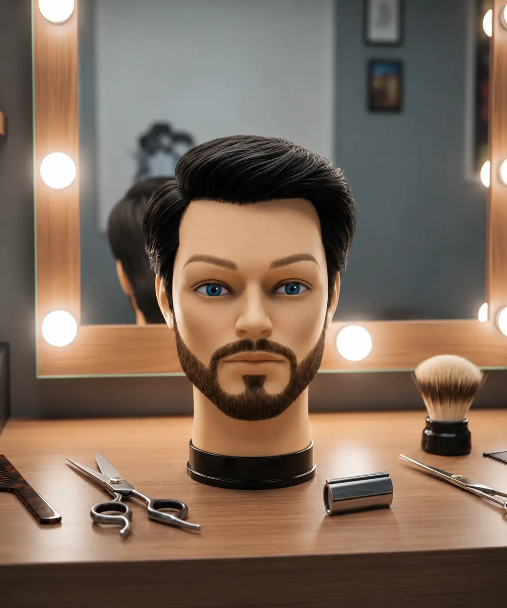
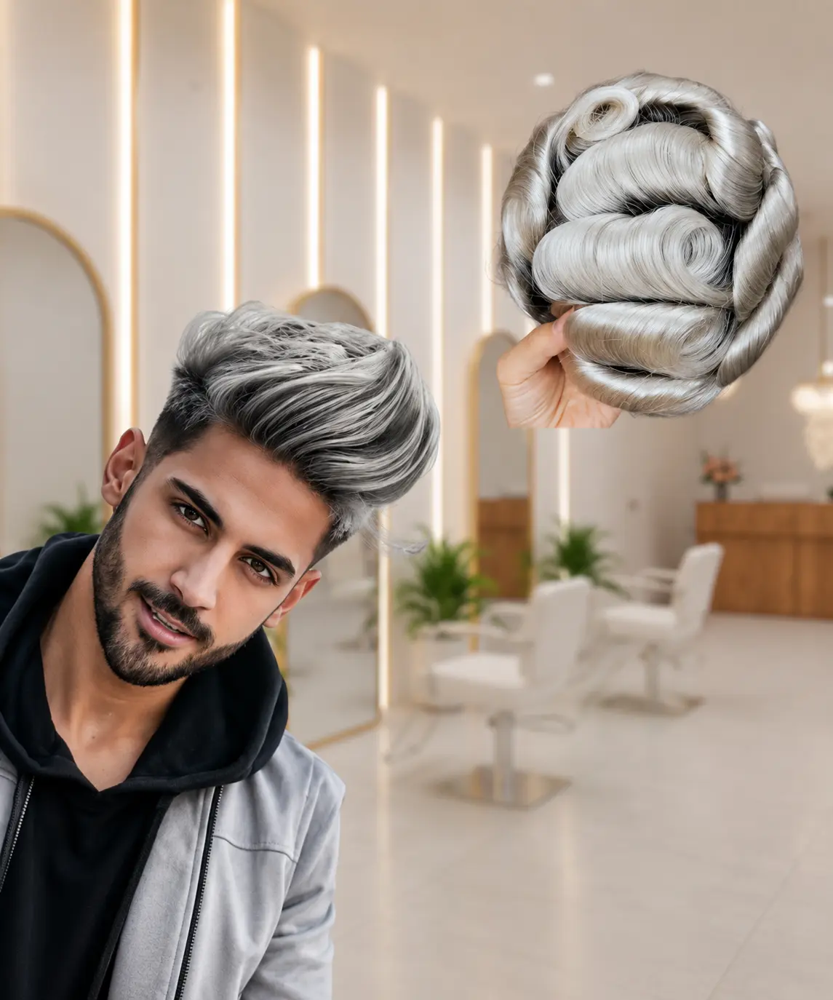
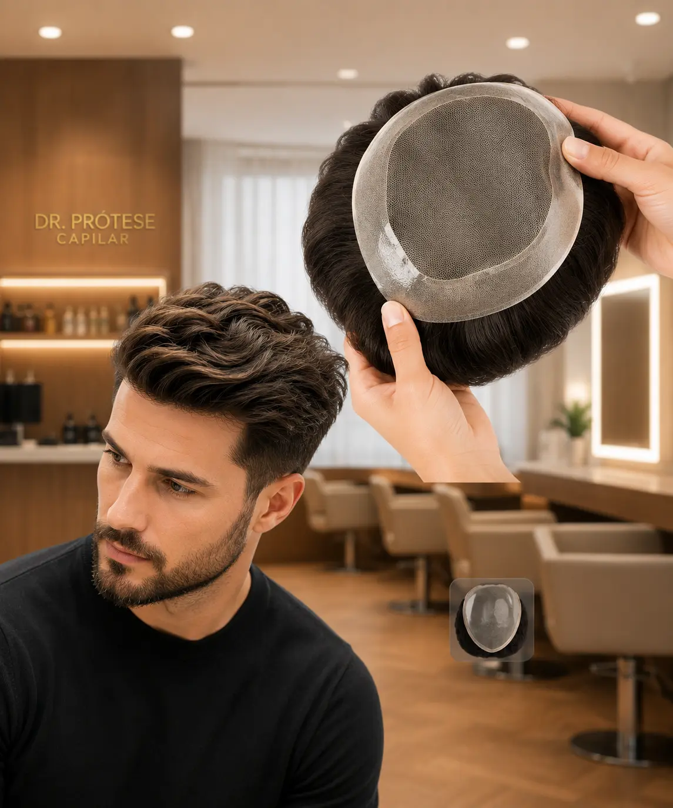
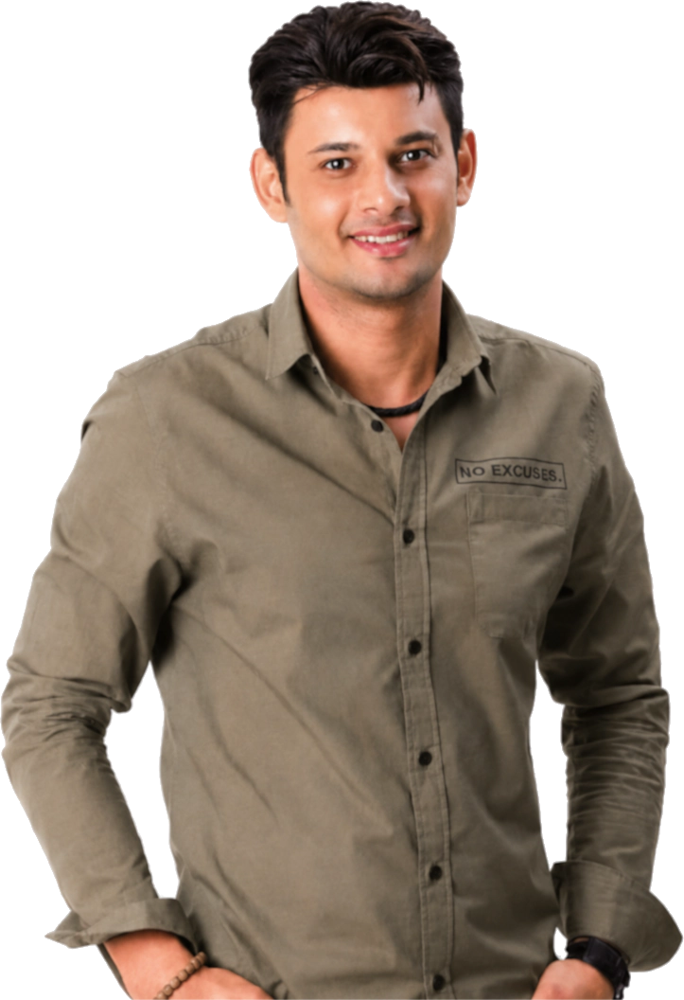

Acabamento natural e adaptação personalizada.
Naturalidade, cuidado e atendimento personalizado em cada transformação.
Encontre respostas para as principais dúvidas sobre próteses capilares, colocação e manutenção.
É muito simples! Basta clicar no botão “Falar no WhatsApp” disponível no menu desta página. Você será direcionado para nossa equipe de especialistas, que irá tirar suas dúvidas e agendar sua avaliação.
A durabilidade média é de 1 ano ou mais, dependendo principalmente dos cuidados diários e da manutenção realizada pelo cliente. Seguindo corretamente nossas orientações, é possível aumentar significativamente a vida útil da prótese.
O procedimento leva, em média, de 2 a 4 horas, dependendo da complexidade de cada caso. Recomendamos que o cliente reserve entre 3 e 6 horas do seu dia para que todo o processo seja realizado com tranquilidade, conforto e máxima qualidade.
Estamos localizados na Rua Tiradentes, nº 109, Centro, Campina Grande – PB.
Sim. No Dr Prótese Capilar, oferecemos serviços de prótese capilar e barbearia. Ao adquirir uma de nossas próteses, você também contará com serviços de barbeiro, incluindo técnicas de visagismo, para garantir um resultado natural e harmonioso.
Sim! Você pode tomar banho normalmente. Também fornecemos um guia completo de cuidados e manutenção. A prótese pode ser utilizada em piscinas e durante atividades do dia a dia, desde que sejam seguidas as orientações de conservação.
Nosso especialista orientará você sobre os produtos mais indicados. Recomendamos produtos específicos para higienização, hidratação e finalização, garantindo um aspecto bonito e natural por muito mais tempo.
Sim. A manutenção periódica é fundamental para preservar a aparência, a higiene e a durabilidade da prótese. A frequência varia conforme o estilo de vida e o crescimento natural do cabelo. Nossa equipe indicará o intervalo ideal para o seu caso.
Sim! Trabalhamos com próteses de alta qualidade. Nosso especialista realiza a adaptação, o corte e a finalização de forma personalizada, respeitando o formato do seu rosto e o seu estilo.
A adaptação costuma ser rápida e varia de pessoa para pessoa. Nos primeiros dias, é normal perceber uma sensação diferente no couro cabeludo, pois você estará se acostumando com a prótese e com a nova aparência. Com manutenção em dia, a prótese permanece firme e segura durante as atividades. Com o uso e o acompanhamento adequado, a prótese passa a fazer parte da rotina de maneira confortável e natural.
Não. A colocação da prótese é um procedimento indolor e não invasivo. Durante a aplicação, nosso especialista utiliza técnicas e produtos adequados para garantir o máximo de conforto.
Realizamos uma avaliação personalizada para identificar o modelo, a cor, a densidade e o estilo mais adequados ao seu perfil, garantindo um resultado natural e harmonioso.
Próteses capilares desenvolvidas para proporcionar naturalidade, segurança e liberdade em diferentes momentos do dia.

Acabamento natural e adaptação personalizada.

Visual moderno com densidade equilibrada.

Modelo desenvolvido para proporcionar conforto.

Estilo clássico com aparência discreta e natural.

Corte personalizado de acordo com o seu perfil.

Solução capilar com ajuste seguro e confortável.

Aparência renovada com resultado harmonioso.

Personalização completa para o seu estilo.
Veja como uma solução personalizada pode renovar a aparência sem perder a naturalidade.
Imagens ilustrativas utilizadas para demonstrar o funcionamento desta seção. Os resultados reais podem variar.
Gratidão por ter você aqui!
Sou Ricardo Pontes, conhecido como Dr Prótese Capilar. Trabalho com visagismo, buscando harmonizar o formato do rosto com o estilo dos cabelos.
Minha paixão pela inovação e pela perfeição me levou a desenvolver técnicas exclusivas e alcançar resultados extraordinariamente naturais. A satisfação de cada cliente me motiva a buscar continuamente as melhores soluções para a calvície, sempre com cuidado, dedicação e atendimento personalizado.

Cada transformação representa uma nova história de confiança e bem-estar.
O resultado ficou muito natural e combinou perfeitamente com o formato do meu rosto. O atendimento também foi cuidadoso durante todo o processo.
JoãoVoltei a me sentir confortável com a minha aparência. A adaptação foi personalizada e recebi todas as orientações necessárias para os cuidados.
MarcosFiquei satisfeito com o acabamento e com a naturalidade do cabelo. A transformação ajudou bastante na minha confiança e autoestima.
André
Rua Tiradentes, 109 – Centro
Campina Grande – PB
Atendimento mediante agendamento.
Como chegarPreencha o formulário e envie sua mensagem diretamente pelo WhatsApp.